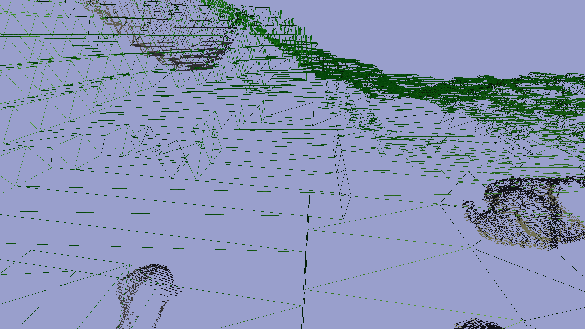

Introduction
Un monde de cubes, ouvert et modifiable.
Méthodes d'optimisation
Afin d'optimiser l'usage des ressources système, j'ai mis en place plusieurs techniques :
• Dans un premier temps, pour minimiser la quantité de vertex, lier différentes
faces en une seule à l'aide d'un modèle modulable :

• Gestion multi-thread de la compression des vertex
• Affiche uniquement les faces présentes devant le joueur
Démonstration
Sur la vidéo ci-dessous, je présente la génération procédurale du monde, que l'on observe
au cours des déplacements du joeur :
• Par le bruit de Perlin en 2 dimensions quand on le considère du point de vue de la surface
• Par le bruit de simplex en 3 Dimensions quand on le considère du point de vue de la génération de cavernes